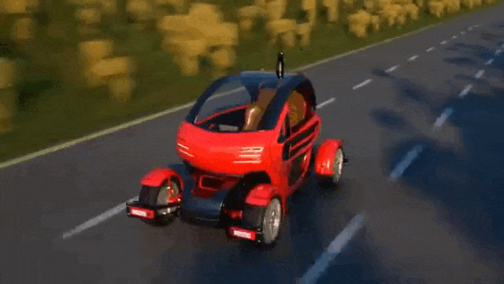
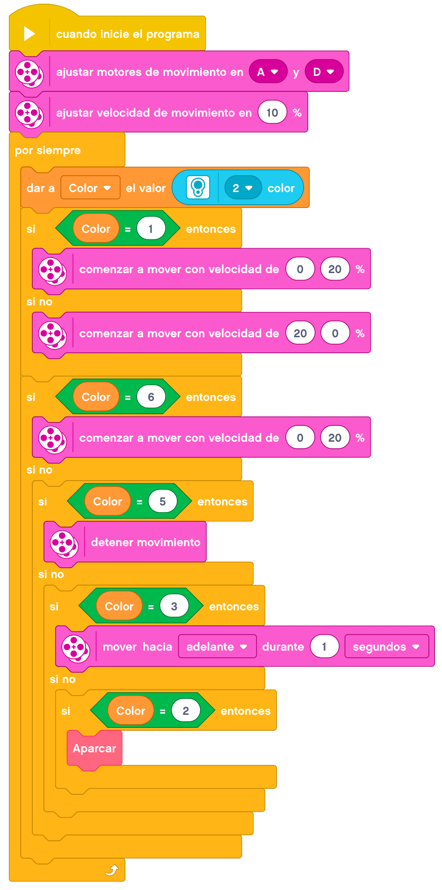
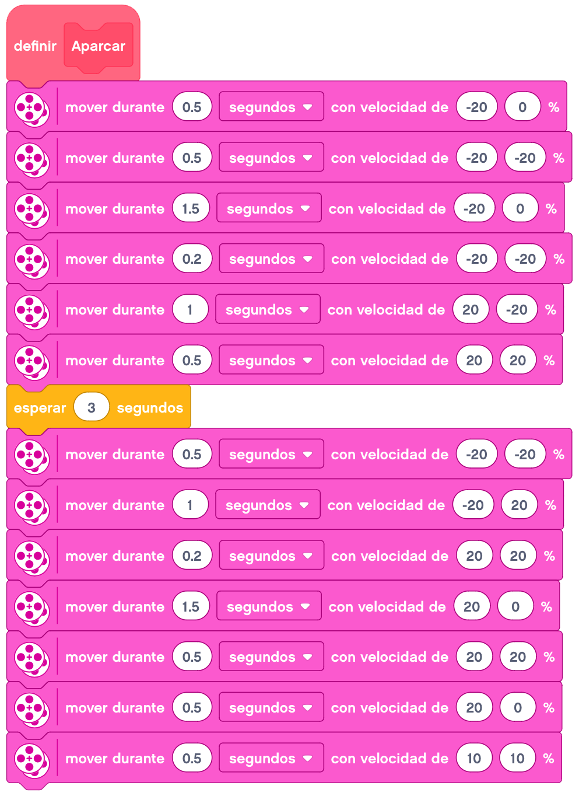

En este tema vamos a montar un coche autónomo.

Construiremos un coche que sea capaz de hacer varias cosas:
- Seguir un circuito (siguelíneas).
- Parar cuando en ese circuito se encuentre una señal roja en la base que indicará que hay un semáforo
en rojo.
- Continuar con el circuito cuando la señal roja la cambiemos por una verde, es decir, que el semáforo
se haya puesto en verde.
- Aparcar cuando en el circuito se encuentre una señal azul.
Podemos imprimir la siguiente imagen para simular la plaza de aparcamiento y los colores que tiene que detectar.
A continuación, mostraremos un ejemplo de construcción de un coche autónomo.
Para nuestro montaje, hemos utilizado la
Base Motriz
a la que añadiremos el
Sensor De Color.
Programaremos el coche para que siga el circuito mediante la programación del siguelíneas:
- Si detecta el color negro, girará un poco parando una rueda buscando el blanco si detecta el color
negro hará lo contrario. De esta forma irá avanzando a través de la línea negra.
- Si detecta el color rojo, se parará (a modo de semáforo) y si detecta el color verde continuará siguiendo la línea negra.
- Si detecta el color azul, aparcará, esperará unos segundos y desaparcará, volviendo a realizar el circuito siguiendo la línea negra.
La programación podría quedar de la siguiente forma.

En este caso, cuando detecta el color azul (2), hemos creado un bloque "Aparcar" donde incluiremos todos los movimientos necesarios para aparcar y desaparcar.

Como retos añadidos, podemos programar otros colores o sensores para que haga diferentes acciones, como minorar la velocidad cuando se encuentre un objeto a cierta distancia hasta pararse cuando esté muy cerca, etc.